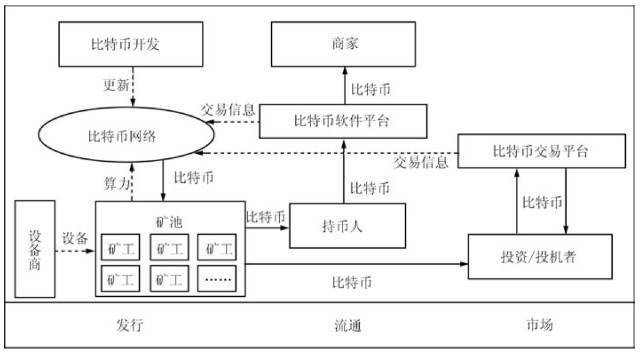
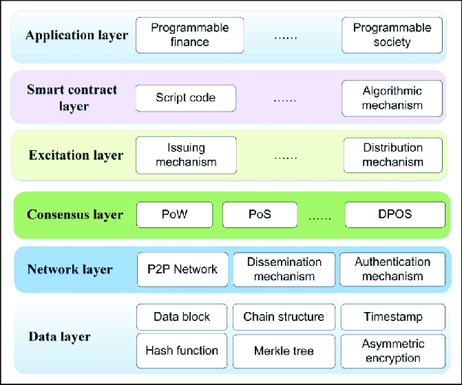
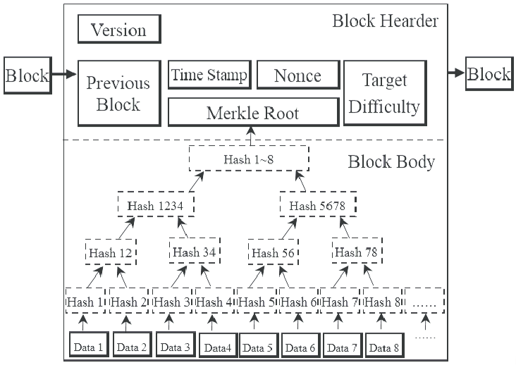
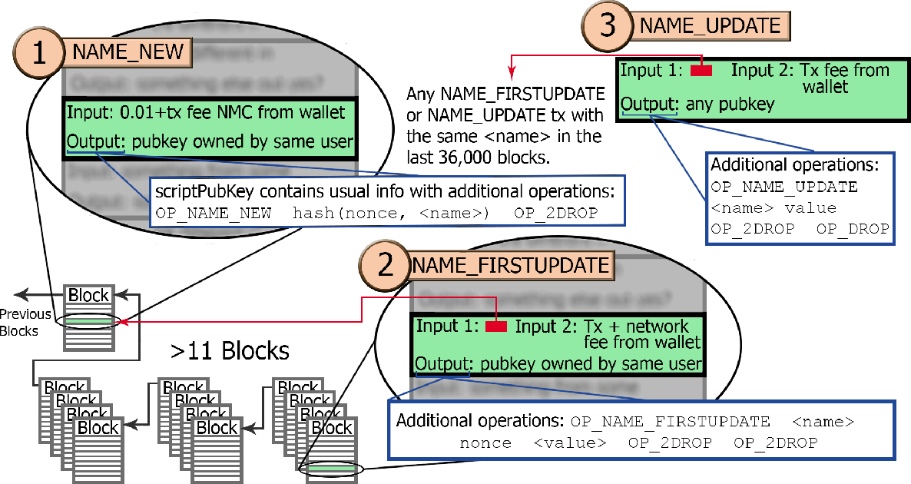

从零开始的区块链与域名系统的学习
老师留下的问题：若要将域名系统使用区块链技术实现，应该如何设计区块链账本？
首先，随便看篇面向非专业人群的介绍性文章，看看区块链到底是什么
这篇文章从金融的角度简要介绍了区块链。简单来说，区块链系统就是一个权力分散完全自治，并具有较强安全性的系统。
然后再看一篇稍稍面向专业人群的同样是介绍性的文章，大致了解一下大概有什么内容。
好的，看完之后还是一头雾水，简单总结一下它说了什么
- 区块链技术基于非对称加密的公私钥验证保障安全性
- 区块链中的所有核心节点都应包含该条区块链数据的全副本
- 区块链只对添加操作有效，对其它操作无效
- 提交的操作不可篡改
- 分为联盟链和公有链
大概知道一点点关于区块链的知识后，就看一下专业的介绍性文章吧
袁勇,王飞跃. 区块链技术发展现状与展望[J]. 自动化学报,2016,42(4):481-494.
比特币生态圈

首先简要描述一下比特币的生态圈：商家和投资商可以通过比特币交易的平台进行比特币的交易，这些交易信息都会存储在比特币网络中。比特币网络可以允许各组织提供自己的计算力来进行运算，没有人会白给你干活，你必须给工资给那些提供挖矿机的人，也就是比特币激励，现在(2019-06-27)每开发一个区块大概能得到13.9比特币。

区块链的总体架构
根据这篇文章的介绍，比特币区块链的主要架构主要分为六层
- 数据层：这层包括了区块、链结构、时间戳、hash函数、Merkle树、非对称加密法。其中区块结构中包含版本号、链接结构(前后区块信息)、随机数(PoW结果)、Merkle树的根节点、目标哈希(比特币网络给出的难度系数)作为区块头，Merkle哈希树和各份交易作为区块体。总体来说，数据层描述了单个节点所包含的数据。
- 网络层：网络层包括了P2P结构的网络、数据广播和验证机制，提供了数据共享的服务
- 共识层：共识层有多种实现方式，比如比特币的PoW、以太坊的PoS、比特股的DPOS等，解决了如何分配任务的问题。
- 激励层：主要包含比特币的发行和分配，规定了什么时候发行货币、具体怎么向矿工分配比特币，已经属于金融领域的范畴了。
- 合约层：也就是可编程的复杂条款,比特币中采用P2PKH脚本语言以及UTXO体制
- 应用层：可编程货币、可变成金融、可编程社会
区块链各层的具体架构
这里只描述数据层、网络层、共识层、合约层的基本架构，有很多金融相关的东西就不多描述了
数据层
这一部分包含了区块链数据在单一节点上的存储状况。首先，整个区块链的数据是一个有序的双链表式的结构，由一个个区块按照登记的时间戳顺序前后链接而成。每一个节点可以存储所有的数据，也可以存储部分数据，存储全部数据的叫做全量节点，只存储全部区块头和部分数据的成为轻量节点。

而每个单独的区块分为区块头和区块体两部分。图中的是比特币的存储格式，区块头仅仅记录前后区块、时间戳、比特网络声明的随机数、PoW结果、Merkle哈希树的根；而区块体记录了完整的Merkle树，Merkle树中每个父节点都是其子节点的哈希值，哈希值的来源是每一份被成为交易(Transcation)的数据。
轻量节点与全量节点的区别就在于存储区块体的多少数据，轻量节点只需存储少量区块体中的与之相关联的一条树链即可。
网络层
区块链网络使用P2P作为组网方式，来组织全球参与数据验证和记账的节点。
比特币交易节点会将每一个得到的新生成的交易数据存储在一个区块中，同时每个节点都一直在找一个从比特网络中得到的一个要求的哈希值，找到之后就向全网节点广播此区块。其他节点收到区块之后都将对新生成的区块内所有的交易进行验证，验证通过后将链条延长，否则直接丢弃。
共识层
共识层，我的理解就是解决由谁开始广播新区块的数据的问题。
比特币使用了PoW(Proof of Work)的机制，首先比特币网络会给出一个随机的目标哈希(Target Difficulty)。它要求找到一个数，它的哈希值小于目标哈希，所以当目标哈希值的前导零越多表示这个数越难找。如果某节点首先找到了这个数，并记录这个数字为Nonce，然后向全网节点广播新区块，该节点可以获得该区块的比特币奖励。PoW机制就是使用这种方式，将区块链的高度控制在每10分钟左右加1，但缺点就是这些大量的无任何社会意义的计算浪费了不少的计算资源。
合约层
合约层解释了数据层中存储的数据是什么，比特币中的数据其实就是一份一份的交易，这里的交易采用UTXO体制，UTXO体制其实就是以类似于支票的形式存储各笔帐，可能对于中国人来说相对会比较难理解。
UTXO体制的每份交易中，包含了该交易输入和输出。就像我有一张100块钱的支票A，我现在想给你20块；我就会先给你写一张20块前的支票B，然后再给我自己写一张80块的支票C。那三张支票的编号会被写进一个交易中，输入是支票A，输出就是支票B得到20块，支票C得到80块。若这份交易验证通过后，支票A就会作废。
比特币的模型在这种交易上还增加了解锁脚本和锁定脚本。每一份交易中的每一个输入都对应一个解锁脚本(输入脚本)，用于向来源的交易说明交易的来源的目标是我，也就是支票A是我的。每一个交易的输出对对应一个锁定脚本(输出脚本)，我要让使用者证明，使用的人是你而不是别人。你在使用这张支票时，要编写解锁脚本来解除我的锁定。
比特币的解锁脚本和锁定脚本使用P2PKH(Pay-to-Public-Key-Hash)，一种堆栈语言。比如：
当前交易的解锁脚本：<Sig><PubKey>
前置交易的锁定脚本：OP_DUP OP_HASH160 <PubkeyHash> OP_EQUALVERIFY OP_CHECKSIG
交易的验证方式就是运行脚本<Sig><PubKey>OP_DUP OP_HASH160 <PubkeyHash> OP_EQUALVERIFY OP_CHECKSIG，看结果是否为TRUE。说到底，它的主要工作如下：
- 验证前一份交易目标的公钥与后一份交易使用者公钥是否相等
- 验证后一份交易给出来的签名是否与前一份交易目标对应
关于Namecoin
这东西的中文资料不是很多，所以看下来还是挺吃力的，老师给了一篇文章，总结一下它的内容。
Bitcoin Domains-Forward-Looking Threat Research Team
这篇文章主要讲到了namecoin及.bit的一些特点。
- namecoin是一个基于区块链技术，可作用于DNS解析的系统；
- 由于他们的结构非常相似，所以namecoin和比特币一样，具有很强的安全性。至少无法直接从该域名解析系统查到相对应的用户真实身份；
- 也由于其安全性，许多的恶意软件制造者喜欢在这里活动，为他们提供了一个有利的空间；
- 由于.bit是一个ADR(Alternative DNS root)，并没有在IANA登记，所以必须得设置不少东西才能使用。比如挂VPN、运行namecoind服务、使用特定的dns等。
看完了这些文章，其实对基于区块链的域名系统的设计已经稍有眉目了，大概就是在区块链的交易里面登记关于域名变动的信息，然后在原本比特币里面的解锁脚本和锁定脚本里作出相应的操作。为了佐证自己的猜想，我再去找了一篇关于namecoin的文章和一篇关于电子钱包中NameScript的介绍
ElectrumX: Name Scripts-namecoin.org
根据上面这篇文章的描述，namecoin为了实现域名的更新，使用了下面这几种操作。这些操作都在输出脚本里面执行

OP_NAME_NEW申请域名，需要附带一笔0.01NMC的交易，解锁脚本一般格式为OP_NAME_NEW hash(nonce,<name>) OP_2DROP OP_DUP OP_HASH160 <PubkeyHash> OP_EQUALVERIFY OP_CHECKSIG，其实就是在比特币解锁脚本的前面加入域名新建的操作。OP_NAME_FIRSTUPDATE首次更新，其实与下面的更新作用几乎相同。需要在NEW操作的12个区块以后执行,额外脚本OP_NAME_FIRSTUPDATE <name> nonce <value> OP_2DROP OP_2DROPOP_NAME_UPDATE更新域名，额外脚本OP_NAME_UPDATE <name> <value> OP_2DROP OP_DROP
域名的信息期限是36000个区块，当超过期限时需要手动更新。
其实，到这里我还有一些很重要的疑问没有解决：
在布置了区块链系统后，namecoin是如何有效率地解决域名访问的问题的？
猜想：使用一个与区块链系统逻辑上独立的数据库，在收到区块更新并验证通过后，将新区块的数据更新到数据库内，而实际上的域名解析是在该数据库上执行的而非区块链系统。也就是，原本DNS服务器的逻辑依然存在，而区块链系统只是接收更新指令而不需要解析。
这一部分的猜想并未找到相应的资料佐证。